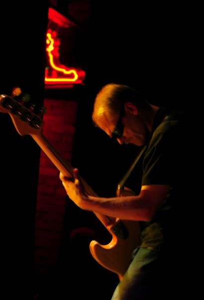

I’ve been a musician since the age of five, starting on keyboards and then moving on to bass, guitar, and saxophone (briefly). I started working pretty much full-time in music right out of high school playing bass and keyboards with my group The New Meanies (formerly the Blue Meanies). We released four albums since forming around 1990, including “Three Seeds” under Virgin Records, as well as the indie follow-up to that, “Highways”. We haven’t done very much recording-wise over the past decade, but we still play 2–3 shows a year in and around Winnipeg.
Over the course of my career as a musician, I’ve had the privilege of opening for a number of world-class artists including Deep Purple, Dave Matthews Band, Alice Cooper, Paul Rodgers (of Queen and Bad Company), Little Feat, Parliament/Funkadelic, The Beach Boys, and Bruce Cockburn, among others. The Meanies were nominated in 1999 for two Juno awards including Best New Group and Album Design, and won a Prairie Music Award for the video for “Letting Time Pass”.
As a sideman and session musician, I’ve played and recorded with many notable current and former Winnipeg artists such as Sweet Alibi, Whitehorse, Sarah Dugas, Scott Nolan, Brandy Zdan, Dan Frechette, AEL, The Guerrillas of Soul, Romi Mayes, The Perpetrators, Twilight Hotel, and Matt Epp, just to name a few.
Bandcamp hosts my most recent solo albums, also listed individually below.
Soundcloud has a number of more recent, unfinished, or experimental recordings.
I tend to put quick musical ideas on Instagram more often than not.
Recently I was featured on Jayme Giesbrecht’s “Made in Manitoba” podcast discussing my music career.
| Year | Artist | Album |
|---|---|---|
| 1993 | The Blue Meanies | Experience Is Lost |
| 1995 | The Blue Meanies | Blue Meanies |
| 1998 | The New Meanies | Three Seeds |
| Leaderhouse | Leaderhouse | |
| 1999 | Sky Onosson | Flight |
| 2000 | Motel 75 | Motel 75 |
| 2001 | The New Meanies | Highways |
| Luke Doucet | Aloha, Manitoba | |
| 2002 | Scott Nolan | Postcards |
| 2003 | Dave Quanbury | No Vacancy |
| 2004 | Sky Onosson | Open the Sun |
| 2005 | Matt Epp | You’ll Find Me Alone |
| 2006 | Scott Nolan | No Bourbon Bad Radio |
| Romi Mayes | Sweet Somethin’ Steady | |
| Sky Onosson | Hairoun | |
| 2008 | Scott Nolan | Canadian Amplifier |
| 2009 | Record of the Week Club | Record of the Week Club |
| Sky Onosson | Odd End | |
| 2010 | Little Miss Higgins | Across the Plains |
| 2011 | Rambling Dan Frechette | Nothing to Lose But the Blues |
| Sky Onosson | Recluse | |
| 2012 | Sky Onosson | Most of This is True |
| 2013 | Sky Onosson | See |
| 2014 | Sheena Grobb | The Breakless Heart |
| 2015 | Sky Onosson | Path |